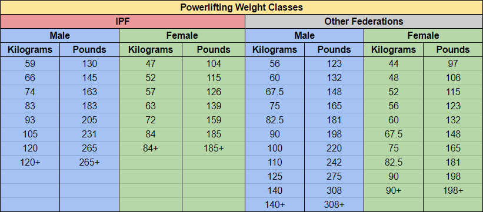

What is Powerlifting?
Powerlifting is a strength sport that consists of three attempts at maximal weight on three lifts: squat, bench press, and deadlift. As in the sport of Olympic weightlifting, it involves the athlete attempting a maximal weight single-lift effort of a barbell loaded with weight plates. Powerlifting evolved from a sport known as "odd lifts", which followed the same three-attempt format but used a wider variety of events, akin to strongman competition. Eventually odd lifts became standardized to the current three.
Classes and Categories
Here we have a self explanatory table of powerlifting weight classes according to the IPF and other federations.
Rules
Training
Weight Training
Powerlifters practice weight training to improve performance in the three competitive lifts—the squat, bench press and deadlift. Weight training routines used in powerlifting are extremely varied. For example, some methods call for the use of many variations on the contest lifts, while others call for a more limited selection of exercises and an emphasis on mastering the contest lifts through repetition. While many powerlifting routines invoke principles of sports science, such as specific adaptation to imposed demand, there is some controversy around the scientific foundations of particular training methods, as exemplified by the debate over the merits of "speed work" using velocity based training or training to attain maximum acceleration of submaximal weights.Powerlifting training differs from bodybuilding and weightlifting, with less focus on volume and hypertrophy than bodybuilding and less focus on power generation than weightlifting.Common set & rep schemes are based on a percentage of the lifter's 1RM (one rep maximum—meaning the most weight they are capable of lifting one time). For example, 5 sets of 5 reps (5x5) at 75% of the 1RM. Rest periods between sets range from 2–5 minutes based on the lifter's ability to recover fully for the next set.Recent advances in the accessibility of reliable and affordable technology has seen a rise in the popularity of velocity based training as a method to autoregulate daily training loads based on bar speed as a marker of readiness and neural fatigue status. Research has shown this to be effective when used both generally or on an individualised basis, and in some studies a superior programming methodology to percentage systems.Accessory movements are used to complement the competition lifts. Common accessory movements in powerlifting include bent over row, good mornings, pull ups and dips.
Variable Resistance Training
Variable resistance training relies upon adjusting resistance for stronger and weaker parts of a lift. Any given movement has a strength phase sequence which involves moving through phases where a person is relatively stronger or weaker. This is commonly called a ‘strength curve’ which refers to the graphical representation of these phases. These phases are based upon related anatomical factors such as joint angles, limb length, muscle engagement patterns, muscle strength ratios etc. Variable resistance training typically involves increasing resistance (usually weight) in the stronger phase and reducing it in the weaker phase. This means the percentage of 1RM for each of the phases respectively can be maintained i.e. lifting a barbell of 80 kg in the weaker phase of a squat is 80% 1RM for that phase, and lifting 120 kg in the stronger phase is 80% 1RM for that phase. The additional resistance can be added through the use of chains attached to the barbell e.g. for a squat in the lower weaker phase the chains rest more on the floor reducing the overall weight. And in the higher stronger phase the chains are lifted from the floor more increasing the overall weight. Bands can be used to increase resistance in a similar manner. Alternatively, partial reps with heavier weights can be used in conjunction with full reps with lighter weights. Training both phases accordingly through variable resistance techniques means the muscles can strengthen more closely in accordance with a person’s natural strength curve. It avoids a situation where, as a result of training, the weaker phase force potential is disproportionately great in regard to the stronger phase force potential. These benefits can help a lifter to become more explosive and to complete lifts faster.